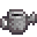

Watering Cans
The Watering Can is a tool obtained at the beginning of the game that is used to water Crops. It may be refilled at any water source, including the kitchen sink (if the player has an upgraded house).
Every crop needs to be watered each day until fully grown. An immature crop that is not watered on any day does not die, but it does not grow either. Mature crops that produce multiple harvests also require daily watering.
Crops planted outside do not need to be watered on days in which it rains. Crops grown indoors (like the Greenhouse and in Garden Pots) need to be watered regardless of weather, as rain does not cover them. Crops grown from Winter Seeds do need to be watered each day in Winter, even if it is snowing. Mature crops that produce a single harvest do not need to be watered, they may be left in place until the player wishes to harvest them. (Note that the formation of Giant Crops requires daily watering of mature plants.)
Using Retaining Soil fertilizer allows crops to stay watered for extra days. Using Sprinklers allows multiple crops to be automatically watered throughout days.
The Watering Can may be upgraded at the Blacksmith. The cost and resource requirements for each upgrade are shown in the table below.
Watering Multiple Tiles
Multiple squares can be reliably watered only in a direct line (up/down or left/right) from the player's current position. The watering region expands in stages, first three squares, and then to five squares, then to a 3 by 3 box, then to a 3 by 6 box.
On a PC, hold left-click to "power-up" an upgraded Watering Can in stages, then release it when the desired area is highlighted. On console, hold down the Y button until a green selection of tiles appears. On a mobile device, tap on the closest square to be watered and wait (very briefly) until the avatar scrunches down, then drag out to the farthest square to be watered, and release when the area to be watered is highlighted. While charging an upgraded Watering Can, the tool hit area can be adjusted by moving the character, who will continue to face in the same direction.
Grades of Watering Can
| Image | Name | Cost | Ingredients | Improvements |
|---|---|---|---|---|
|  | Watering Can | Starter Tool | N/A | Has a total water capacity of 40 charges before it has to be refilled. |
| Copper Watering Can | Capacity increased to 55 charges.
Increases maximum area of effect to 3 tiles in a straight line. | |||
| Steel Watering Can | Capacity increased to 70 charges.
Increases maximum area of effect to 5 tiles in a straight line. | |||
| Gold Watering Can | Capacity increased to 85 charges.
Increases maximum area of effect to a 3x3 area (9 corresponding tiles). | |||
| Iridium Watering Can | Capacity increased to 100 charges.
Increases maximum area of effect to a 6x3 area (18 corresponding tiles). |
Upgrades and Water Consumption
At minimum power, all Watering Cans water one tile and use one unit of water (one charge). A maximum-power Copper Watering Can uses 2 units of water and waters 3 tiles. A maximum-power Steel Watering Can uses 3 units of water, Gold uses 4, and Iridium uses 5 units of water. If the amount of water in a can is not enough to cover a powered-up area, the game will allow the powered-up operation anyway.
Tips for upgrading the watering can:
- It takes 2 nights to upgrade the Watering Can. For example, if the watering can is given to Clint on the 10th day of the season, it will be ready on the 12th day.
- It's easier to upgrade the watering can in Winter, since only Powdermelon and Winter Seeds require watering that season.
- The weather report on TV shows the forecast for the next day. If it's going to be rainy or stormy, make sure that all crops are irrigated and give the watering can to Clint the same day. The next day, all of the crops will be watered by the rain. The watering can will be ready the day after that.
- A Rain Totem can be used to set the weather of the next day to rainy.
- The watering can can also be upgraded on the 27th day of any season, since most crops don't need to be watered on the last day (28th) of the month, as they will wither and die when the new season comes. The watering can will be ready on the 1st day of the next season. This does not apply to multi-season crops (i.e., Ancient Fruit, Coffee Bean, Corn, Sunflower, and Wheat).
- It will not rain on festival days. Clint is not available during some of the festival days.
- If you have restored the Community center, Clint will not be available in his shop on Fridays. Meaning tool upgrades purchased on Wednesday will only be available on Saturday.
Energy Cost
- See Proficiency
Trivia
- Watering a Torch, Campfire, or other crafted lighting object will not put it out; it will remain lit.
- The sink inside an upgraded Farmhouse counts as a water source. However, the sinks inside villager houses do not.
- Watering a pet's water bowl will result in that pet's friendship increasing by 6 points by next morning.
History
- 1.3.27: The player can refill a Watering Can at the kitchen sink, if the player has a kitchen.
- 1.4: The player can refill a Watering Can at a Fish Pond.
- 1.6: The player can now "strafe" while charging a watering can or hoe, allowing them to reposition their tool hit area without changing their facing direction.
| Tools | |
|---|---|
| Basic | Axes • Golden Scythe • Iridium Scythe • Hoes • Pans • Pickaxes • Scythe • Trash Cans • Watering Cans |
| Fishing | Training Rod • Bamboo Pole • Fiberglass Rod • Iridium Rod • Advanced Iridium Rod • Crab Pot |
| Other | Auto-Grabber • Auto-Petter • Hay Hopper • Heater • Incubator • Milk Pail • Ostrich Incubator • Shears |